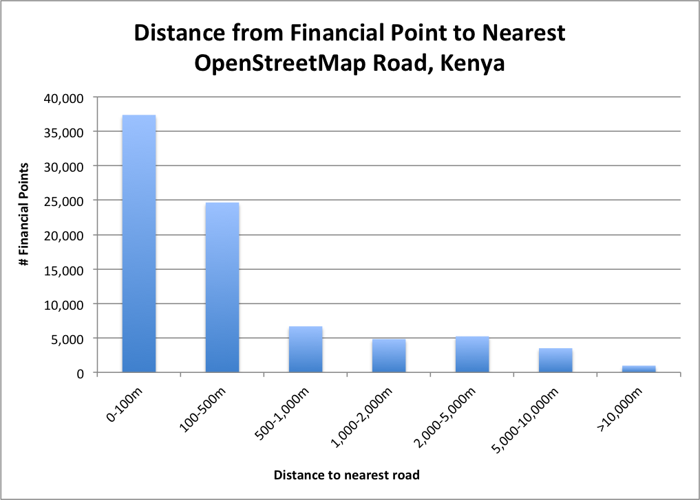
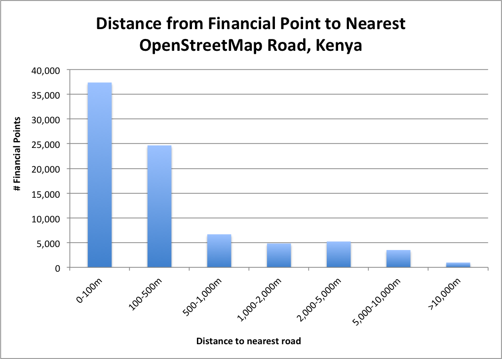
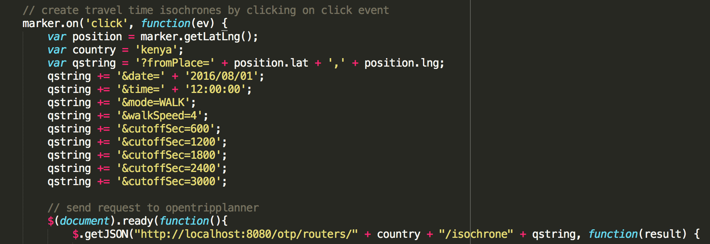
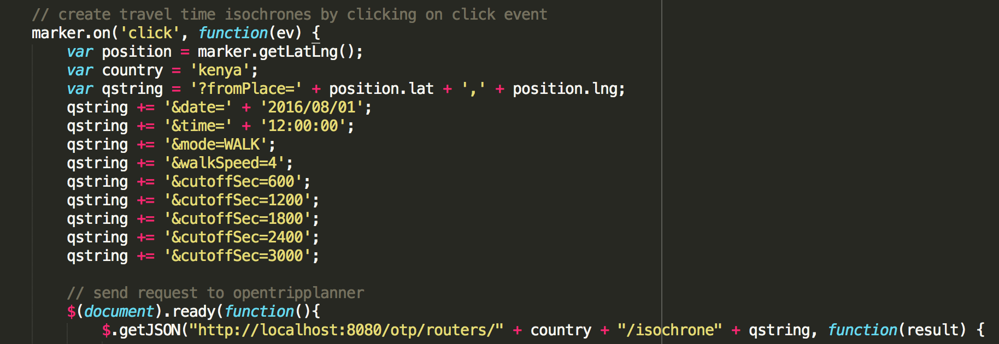

Spatial Analysis in the Developing World
Measuring Access with OpenStreetMap & OpenTripPlanner


 



 



// Edges will only be found if they are closer than this distance
public static final double MAX_DISTANCE_FROM_STREET_METERS = 1000;
private static final double MAX_DISTANCE_FROM_STREET_DEGREES =
MAX_DISTANCE_FROM_STREET_METERS * 180 / Math.PI / SphericalDistanceLibrary.RADIUS_OF_EARTH_IN_M;